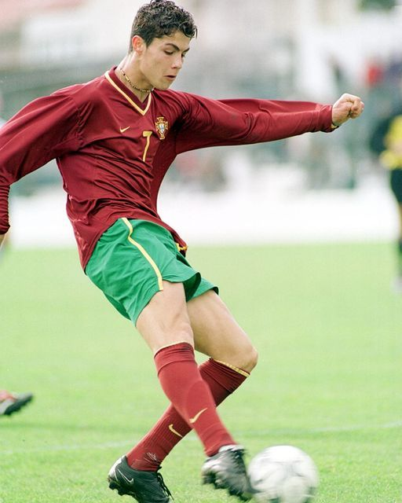

About Cristiano Ronaldo
Cristiano Ronaldo dos Santos Aveiro ( born 5 February 1985) is a Portuguese professional footballer who plays as a forward for and captains both Saudi Pro League club Al Nassr and the Portugal national team. Widely regarded as one of the greatest players of all time, Ronaldo has won five Ballon d'Or awards,a record three UEFA Men's Player of the Year Awards, and four European Golden Shoes, the most by a European player. He has won 33 trophies in his career, including seven league titles, five UEFA Champions Leagues, the UEFA European Championship and the UEFA Nations League.
Early life and career

Ronaldo’s father, José Dinis Aveiro, was the equipment manager for the local club Andorinha. (The name Ronaldo was added to Cristiano’s name in honor of his father’s favorite movie actor, Ronald Reagan) At age 15 Ronaldo was diagnosed with a heart condition that necessitated surgery, but he was sidelined only briefly and made a full recovery. He first played for Clube Desportivo Nacional of Madeira and then transferred to Sporting Clube de Portugal, where he played for that club’s various youth teams before making his debut on Sporting’s first team in 2002.A tall player at 6 feet 1 inch, Ronaldo was a formidable athlete on the pitch. Originally a right-winger, he developed into a forward with a free-reined attacking style. He was able to mesmerize opponents with a sleight of foot that made sufficient space for openings in opposing defenses.
International Carrer
At the age of 18, Ronaldo made his debut for Portugal as a substitute against Kazakhstan on 20 August 2003.At UEFA Euro 2004, he scored his first international goal in a 2–1 group stage loss to Greece in his eighth international appearance.Despite Portugal losing to Greece again in the final, Ronaldo made the team of the tournament, with two assists and two goals.In the 2006 FIFA World Cup, at the age of 21 years and 132 days, Ronaldo became the youngest ever goalscorer for Portugal at a World Cup finals.Portugal reached the semi-finals, where Portugal lost to France, with Ronaldo being booed during their defeat, due to an incident ocurred in the quarter-finals against England.FIFA's Technical Study Group overlooked him for the tournament's Best Young Player award and handed it to Germany's Lukas Podolski, citing his behaviour as a factor in the decision.

Return to Manchester United (2021–2022)

Appearence : 54
Goals : 27
Assists : 131
Titles :
On 27 August 2021, Manchester United announced they had reached an agreement with Juventus to re-sign Ronaldo, subject to agreement of personal terms.Ronaldo was given the number 7 shirt after Edinson Cavani agreed to switch to 21.The first 24 hours of Ronaldo's shirt sales was reported to have broken the all-time record following a transfer.
Al Nassr (2023–present)
.jpeg)
Appearence : 77
Goals : 70
Assists : 9
Titles :
1 Arab Club Champions Cup
On 30 December 2022, Saudi club Al-Nassr reached an agreement for Ronaldo to join the club, signing a contract until 2025.Ronaldo received the highest football salary ever, at €200 million per year,including a guaranteed football salary of €90 million, with commercial and sponsorship deals bringing his total annual salary to €200 million.
GREATEST OF ALL TIME
Total Appearences : 1240
Total Goals : 903
Total Assits : 254
Undoutedly Cristiano Ronaldo is the Greatest Of All Time.He inspired Millions of people,he got more than 1 Billion followers across social media.His influence is unreal. His mindset, decipline, confidence and hardwok is unmatched.
"Talent without hardwork is nothing" - cristiano
--THANK YOU--